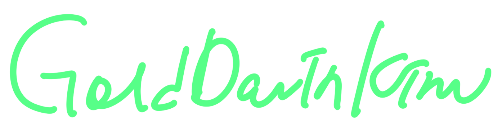

From Seoul, South Korea
Currently working between Geneva and London
Education
University of Art and Design, HEAD – Genève, Master’s Degree in Media Design
2025-Current
University of Art and Design, HEAD – Genève, Bachelor of Fine Arts
2022-2025
Chelsea College of Arts, UAL - London, The UK, Exchange Program in Fine Arts
2024
University of the Arts, Backche - Seoul, South Korea, Program in MIDI Composition
2017
Residency
ART SU Residency, London, The UK
Nov 2024 - Mar 2025
Past Exhibition
Echoes of Connection, Dipolma Show ‘Listen, before i go’ exhibited and performed at Head-Genève, Geneva, Switzerland 2025
Missing Home, Collective Show ‘The Gift’ exhibited at Schaufenster, Berlin, Germany
2025
Whisper starts, echo light exhibited at Central Saint Martins, London, The UK
FEB 2025 - MAR 2025
Inhale winter, exhale spring exhibited at London College of Communication, London, The UK
JAN 2025 - FEB 2025
ARDE Show exhibited at LIYH, Geneva, Switzerland
2024
Close your eyes, see through your feelings exhibited at the Cookhouse, Chelsea College of Arts, London, The UK 2024
A short film 'Marble hill' featured at the Long room bar & hotel, London, The UK
2024
The Audiotype collaborative featured at the Waterloo station, London, The UK
2024
Flow of thoughts featured at Les salons, Geneva, Switzerland
2023
Smili show exhibited at LIYH, Geneva, Switzerland
2022
Collective Workshops
Move Body See Sound, Tokoname, Japan
2025
Move Body See Sound, Geneva, Switzerland
2025
Exploring The City Through Soundwalking, London, The UK
2025
Harmony in Motion, Echoes of Connection - part 2, Tate Modern, London, The UK
2025
Harmony in Motion, Echoes of Connection - part 1, Chelsea College of Arts, London, The UK
2024
EP Album / Single
Dreamer
2023
Midnight in Paris
2022
sorry
2021
Leonardo
2020
When Our Summer Meets
2020
Memory
2019
Our Times
2019
Empty
2019
PIZZA
2019
Winter
2018
Interviews
Interviewed by Genie Music, Seoul, South Korea
2020, 2021
EBS Radio Park Won as the new musician of the Music Wonderland, Seoul, South Korea
2018